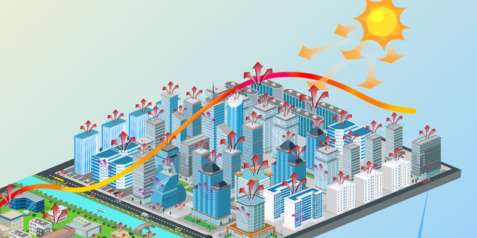
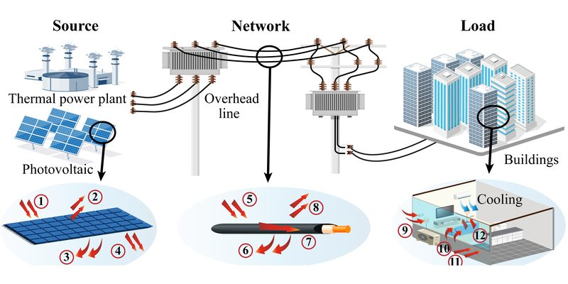
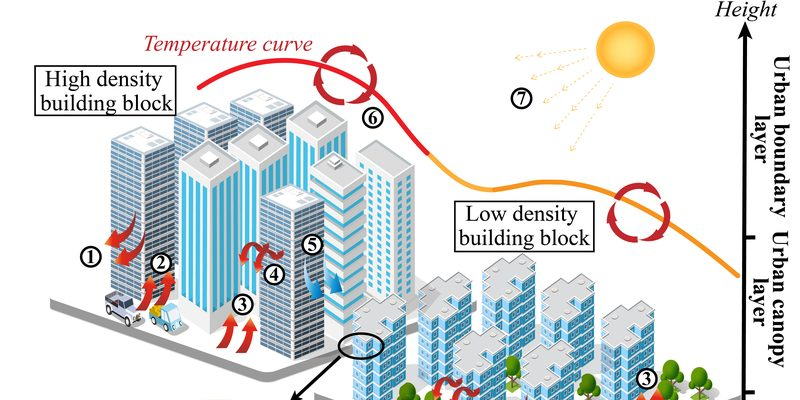
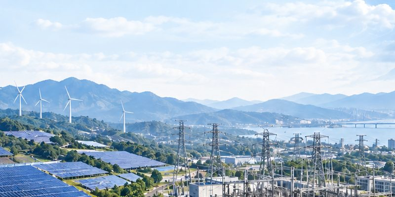

About Me
I am a Ph.D. candidate in Electrical and Computer Engineering at the State Key Laboratory of Internet of Things for Smart City, University of Macau, supervised by Prof. Yonghua Song (FREng, MAE, IEEE/IET/CSEE Fellow) and co-supervised by Prof. Hongxun Hui. I am currently a visiting scholar at Newcastle University, UK, working with Prof. Vladimir Terzija (IEEE Fellow, Humboldt Fellow).
My research sits at the intersection of urban climate, buildings and power systems. I study how urban heatwaves and microclimates interact with building cooling demand, and how distribution grids can be dispatched and planned to stay resilient as heat extremes intensify. Before joining UM, I received my M.Eng. in Electrical Engineering from Shandong University and my B.Eng. in Smart Grid Information Engineering from Qingdao University of Science and Technology, where I worked on the optimal dispatch of integrated electricity–gas–heat energy systems.
张振威，澳门大学智慧城市物联网国家重点实验室博士研究生，导师为宋永华教授，合作导师为惠红勋教授，英国纽卡斯尔大学访问学者（合作导师 Vladimir Terzija 教授）。研究方向为城市微气象—建筑能源—电力系统耦合与优化，聚焦高温热浪下的建筑空调负荷特性、配电系统气候自适应调度与规划，以及综合能源系统优化调度。以第一/第一学生作者在 The Innovation Energy、IEEE Transactions on Smart Grid、IEEE Transactions on Industry Applications、Energy、《中国电机工程学报》等期刊发表论文，其中 2 篇入选 ESI 高被引论文。


Bidirectional coupling between urban heat and air-conditioning load; breaking the heatwave–energy vicious cycle.


Dispatch and long-horizon expansion planning under spatiotemporally heterogeneous heatwaves.


Response capacity allocation of air conditioners and building clusters for peak-valley regulation.


Distributed, chance-constrained and multi-timescale optimal dispatch of electricity–gas–heat systems.
News
- Awarded the Guangdong–Hong Kong–Macao Greater Bay Area (UM) Taihu Scholarship.
- Started my visit to Newcastle University, UK, as a visiting scholar with Prof. Vladimir Terzija.
- Serving as Special Student Forum Chair of the 11th Asia Conference on Power and Electrical Engineering (ACPEE).
- Our paper on heatwave-aware distribution system planning received the Best Paper Award at IEEE SCEMS 2025, Pusan, Korea.
- Our paper on mitigating the vicious cycle between urban heatwaves and building energy systems in the Greater Bay Area was published in The Innovation Energy (Cell Press).
- Our IEEE Transactions on Smart Grid paper on microclimate-interactive air-conditioner response capacity was selected as an ESI Highly Cited Paper.
- Served as General Chair of the 7th IEEE Student Conference on Electric Machines and Systems (SCEMS 2024).
- Our perspective on urban microclimate, urban energy systems and urban buildings was published in The Innovation Energy.
Education & Experience
- Postdoctoral Fellow, University of MacauFrom Jan 2027Faculty of Engineering · Supervisor: Prof. Yonghua Song
- Visiting Scholar, Newcastle University, UKJul 2026 – Dec 2026School of Engineering · Host: Prof. Vladimir Terzija
- Ph.D., Electrical and Computer Engineering, University of MacauJan 2023 – Dec 2026Supervisor: Prof. Yonghua Song · Co-supervisor: Prof. Hongxun Hui
- Research Assistant, Zhuhai UM Science & Technology Research InstituteSep 2022 – Dec 2022Smart City Research Center · Supervisor: Prof. Hongxun Hui
- M.Eng., Electrical Engineering, Shandong UniversitySep 2019 – Jul 2022Supervisor: Prof. Chengfu Wang · GPA ranking 6/143 (top 4.2%)
- B.Eng., Smart Grid Information Engineering, Qingdao University of Science and TechnologySep 2015 – Jul 2019GPA ranking 1/30
Publications
- Mitigating the vicious cycle between urban heatwaves and building energy system in Guangdong–Hong Kong–Macao Greater Bay AreaZhenwei Zhang, Hongxun Hui, Yonghua SongThe Innovation Energy, 2025, 2(2): 100080.
- Response capacity allocation of air conditioners for peak-valley regulation considering interaction with surrounding microclimateZhenwei Zhang, Hongxun Hui, Yonghua SongIEEE Transactions on Smart Grid, vol. 16, no. 2, pp. 1155–1167, 2025.ESI Highly Cited · Top 1%
- Interdisciplinary collaborative perspectives: urban microclimate, urban energy systems, and urban building sectorsYonghua Song, Zhenwei Zhang, Hongxun HuiThe Innovation Energy, 2024, 1(4): 100053.First-student author
- Microclimate-interactive energy management of building clusters: linking local meteorology effect with terminal operation efficiencyZhenwei Zhang, Hongxun Hui, Yonghua SongCSEE Journal of Power and Energy Systems, 2025.
- Hierarchical energy efficiency optimization of urban building clusters under the “microclimate–energy consumption” vicious cycleZhenwei Zhang, Hongxun Hui, Houpeng Hu, Yonghua SongProceedings of the CSEE (中国电机工程学报), 2025.
- Optimal dispatch for cross-regional integrated energy system with renewable energy uncertainties: a unified spatial-temporal cooperative frameworkZhenwei Zhang, Chengfu Wang, Qiuwei Wu, Xiaoming DongEnergy, 2024, 292: 130433.ESI Highly Cited · Top 1%
- Distributed chance-constrained optimal dispatch for integrated energy system with electro-thermal couple and wind-storage coordinationZhenwei Zhang, Yan Wang, Chengfu Wang, et al.IEEE Transactions on Industry Applications, vol. 61, no. 1, pp. 833–846, 2025.
- Multitime scale co-optimized dispatch for integrated electricity and natural gas system considering bidirectional interactions and renewable uncertaintiesZhenwei Zhang, Chengfu Wang, Shuai Chen, et al.IEEE Transactions on Industry Applications, vol. 58, no. 4, pp. 5317–5327, 2022.
- Day-ahead optimal dispatch for integrated energy system considering power-to-gas and dynamic pipeline networksZhenwei Zhang, Chengfu Wang, Huacan Lv, et al.IEEE Transactions on Industry Applications, vol. 57, no. 4, pp. 3317–3328, 2021.
- Localized climate-aware dispatch of distribution system: addressing heatwave spatial heterogeneity via source-network-load coordinationZhenwei Zhang, Jiahao Wu, Hongxun Hui, Liang Gao, Yonghua SongIEEE Transactions on Smart GridUnder review
- Long-horizon climate-adaptive expansion planning for distribution system under spatiotemporally heterogeneous heatwavesZhenwei Zhang, Sheng Wang, Hongxun Hui, Vladimir Terzija, Yonghua SongIEEE Transactions on Smart GridUnder review
- Quantifying electricity demand for cooling under bidirectional feedback between buildings and microclimateZhihua Chen, Zhenwei Zhang, Hongxun HuiIEEE Transactions on Smart GridUnder revision
- Two-stage robust planning for urban distribution system with heatwave seasonal imbalance and progressive intensificationZhenwei Zhang, Hongxun HuiIEEE 8th Student Conference on Electric Machines and Systems (SCEMS), Pusan, Korea, 2025.Best Paper Award
- Interdisciplinary collaboration perspectives for smart city development: urban microclimates, energy systems, and building sectorsYonghua Song, Zhenwei Zhang, Hongxun HuiUMagazine, Issue 31, pp. 47–50, 2025.
- Energy-saving potential assessment of building energy system considering climate impactsZhenwei Zhang, Hongxun HuiIEEE Sustainable Power and Energy Conference (iSPEC), Chongqing, China, 2023.
- Multi-time scale co-optimization scheduling of integrated energy system for uncertainty balancingZhenwei Zhang, Chengfu Wang, et al.IEEE/IAS Industrial and Commercial Power System Asia (I&CPS Asia), Chengdu, China, 2021.
- Day-ahead optimal dispatch for integrated energy system considering power-to-gas and dynamic pipeline networksZhenwei Zhang, Chengfu Wang, Ming Yang, Xi Chen, Huacan LvIEEE Industry Applications Society Annual Meeting, Detroit, MI, USA, 2020.
- Embedding P2P transaction into demand response exchange: a cooperative demand response management framework for IESK. Wang, C. Wang, W. Yao, Z. ZhangApplied Energy, 2024, 367: 123319.
- A tri-layer decision-making framework for IES considering the interaction of integrated demand response and multi-energy market clearingW. Yao, C. Wang, M. Yang, K. Wang, X. Dong, Z. ZhangApplied Energy, 2023, 342: 121196.
- Multi-time scale active and reactive power coordinated optimal dispatch in active distribution network considering multiple correlation of renewable energy sourcesS. Chen, C. Wang, Z. ZhangIEEE Transactions on Industry Applications, vol. 57, no. 6, pp. 5614–5625, 2021.
- Flexibility evaluation method of power system considering the impact of multi-energy couplingY. Zhao, C. Wang, Z. Zhang, H. LvIEEE Transactions on Industry Applications, vol. 57, no. 6, pp. 5687–5697, 2021.
- Multi-timescale active distribution network optimal dispatching based on SMPCK. Wang, C. Wang, Z. Zhang, X. WangIEEE Transactions on Industry Applications, vol. 58, no. 2, pp. 1644–1653, 2022.
- Distributed optimization of integrated energy system based on cooperative game in uncertain environmentW. Yao, C. Wang, Y. Zhao, Z. ZhangAutomation of Electric Power Systems (电力系统自动化), 2022, 46(20): 43–53.
Patents
- 考虑跨区互动的综合能源系统时空协调调度方法及系统GrantedSpatiotemporal coordinated dispatching of integrated energy systems considering cross-regional interactionsCN115222095B · 2026
- 建筑光伏光热系统动态建模与最优调度方法GrantedDynamic modeling and optimal scheduling of building PV/T systemsCN121835138B · 2026
- 一种应对热浪季节性失衡与逐年强化的配电系统规划方法GrantedDistribution system planning for heatwave seasonal imbalance and year-on-year intensificationCN122414759B · 2026
- 电-气互联系统日前协同优化调度方法及系统GrantedDay-ahead coordinated optimization for electric–gas interconnected systemsCN114781694B · 2025
- 电-气互联系统多时间尺度联合优化调度方法及系统GrantedMulti-time-scale joint optimal dispatch for electric–gas interconnected systemsCN114781817B · 2025
- 一种综合能源系统日前优化调度方法及系统GrantedDay-ahead optimal dispatch method and system for integrated energy systemsCN112862158B · 2023
- 一种建筑能耗分析方法、装置和设备PublishedMethod, apparatus and device for building energy consumption analysisCN121902415A · 2026
- 建筑能源系统的功率信息处理方法及设备PublishedPower information processing for building energy systemsCN119514966A · 2024
Research Projects
Physical modeling of cross-border power and gas networks; distributed decoupled solution for Xinjiang–Mongolia, Portugal–Spain and UAE–Oman scenarios; coordinated optimization module for the Altay–Khovd interconnected grid.
Unified thermal model of urban microclimate and AC loads; interaction analysis and multi-spatiotemporal joint optimization.
Aggregation model of urban flexible resources; game-based bi-level response capacity allocation; scenario tests on building flexible loads in Macao.
Hierarchical control of multi-type energy storage in distributed energy systems.
Distributed coordinated optimization for cross-border multi-region integrated energy systems.
Honors & Awards
- Greater Bay Area (University of Macau) Taihu Scholarship2026
- Best Paper Award, IEEE 8th Student Conference on Electric Machines and Systems2025
- Outstanding Contribution as Workshop Chair, Int. Conf. on Electrical Power Systems and Intelligent Control2025
- First Prize Poster Award, Macao Conference on Smart City Technologies2023
- Outstanding Graduate of Shandong Province (Master)2022
- National Scholarship2021
- Outstanding Graduate of Shandong Province (Bachelor)2019
- National Encouragement Scholarship (three times)2016–2019
Show more honors
- Outstanding Social Practice Team of Shandong Province2020
- First Prize Scholarship · Outstanding Graduate · Outstanding Student Cadre, Shandong University2020–2021
- Excellent Graduation Thesis · Outstanding Graduate, Qingdao University of Science and Technology2019
- First Prize, Mobile Internet Innovation & Entrepreneurship Competition, Shandong S&T Festival2018
- National Undergraduate Electronic Design Contest — First Prize (Shandong)2017
- Top Ten Outstanding Student Leaders of the College, QUST2017
- “Siemens Cup” Intelligent Manufacturing Challenge — Third Prize (Shandong)2016
- National University Student Intelligent Car Race — Third Prize (Shandong)2016
Academic Service
- Special Student Forum Chair, 11th Asia Conference on Power and Electrical Engineering2026
- Chair, IEEE Industry Applications Society Student Branch Chapter, University of Macau2024–2026
- Global Committee Chair, IEEE Student Conference on Electric Machines and Systems2025
- Workshop Chair, 2nd Int. Conf. on Electrical Power Systems and Intelligent Control2025
- Program Committee Member, 5th Energy Conversion and Economics Annual Forum2025
- General Chair, 7th IEEE Student Conference on Electric Machines and Systems2024